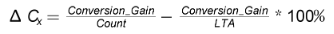

Signal to Noise Ratio (SNR) Measurement Tab
Capacitive sensing designs should have the SNR and design margins for each
sensing element checked using this tool. The SNR tool measures signal (S), noise (N),
the detection threshold (Th), and the design margins (margin in and margin out). These
parameters describe the ability of the design to handle additional noise, whether due to
device variation or an external noise source.
When connected to the target, the Measure SNR button will initiate a series of
measurements on the selected element and update the results table. Advice will be given
that indicates whether the design has good margin, poor margin, or if additional characterization
is needed.
TI highly recommends that developers read the application report SLAA843 on Sensitivity,
SNR, and Design Margin in Capacitive Sensing Applications for additional detail on these topics.
Options
- Filtering Enabled
Selecting this option applies the Count Filter settings found in the Tuning Tab.
This filter can impact the SNR results. Please refer to the Filter Count Beta and
Enable options found in the Tuning Tab. TI recommends enabling the count filter.
- Sample Size
The sample size is the number of samples taken during the touch portion of the
test and the release portion of the test. TI recommends capturing 1000 samples.
- Measurement Selection
Select "Touch" to measure the touch detection SNR and margins. Select "Prox" to measure the proximity detection SNR and margins.
- Element
Select the desired sensing element in the current sensor to measure.
- Export CSV
Export the entire sample set for the next measurement to the SNR CSV file in the project folder.
- Overwrite CSV
If Export to CSV and Overwrite CSV are selected, then the SNR CSV file in the project directory will be cleared before the SNR measurement is performed and only the new results will be kept in the SNR CSV file. If this option is not selected, then each
measurement is appended to the existing CSV file.
Results
- Signal
Signal 'S' is the average percent change in capacitance due to a touch or proximity. In normal operation, self capacitance sensors experience an increase in capacitance due to a touch. Mutual capacitance sensors experience a decrease in capacitance due to a touch. Signal is computed from the count and LTA values per the equation below.

- Noise
Noise 'N' is defined as the maximum percent change in capacitance due to noise, in the direction of interest (the direction of a touch or proximity).
- Threshold
The detection threshold 'Th' sets the sensitivity of the sensor. It defines the minimum percent change in capacitance (up or down) which must occur for a proximity or touch detection to be reported.
- Margin In
Margin In is the false detection margin, or the margin going into a touch. It is the margin between the highest noise level 'N' and the detection threshold 'Th'. This is how much additional noise can be tolerated before a false detection would occur. This is arguably the most valuable parameter when conducting a reliability analysis.
- Margin Out
Margin Out is the detection margin, or the margin going out of a touch. It is the margin between the lowest signal level 'Smin' and the detection threshold 'Th'. This is how much additional noise can be tolerated during a valid touch before the touch status would be reported as cleared because noise has pulled the measurement result below the detection threshold.
- SNR
SNR is the straight ratio of signal 'S' to noise 'N', calculated as S/N.
Finally, the SNR tool will provide advice as to the meaning of the design margin values.
The advice options are shown below.
- Good
If the advice is 'good', than the application which was tested has sufficient false detection margin (Min). This advice is given when the false detection margin which was measured is larger than the maximum expected device variation at nominal temperature (25 C), plus a safety factor.
- Poor
If the advice is 'poor', than the application which was tested has very low or no design margin, and the hardware and or mechanical design must be modified to either increase signal or reduce noise levels to achieve sufficient margin. To determine why the advice is poor, examine the signal levels and noise levels. If the signal level is very low (for example, less than 0.5%) than it is likely that the poor result is due to inadequate signal. If the signal level is reasonable, and the noise level is high, the system should be analyzed to understand if there is a noise aggressor present in the system.
- Characterization Needed
If the advice is 'characterization advised', then the measured design margin on the tested unit is minimal, and additional testing of several units is required to determine if there is sufficient design margin in mass production. This additional analysis is necessary because device floor noise can vary unit to unit, and the current measurement results indicate that the sensor which was measured may be impacted by that noise variation. In the event that characterization is advised, refer to the instructions in SLAA843.